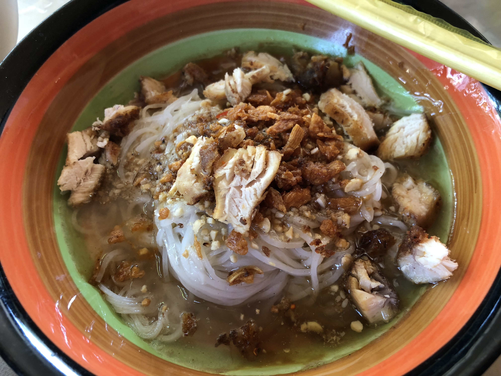

Shan Noodles
Return to Home

Shan Noodles—one of the most popular dishes in Myanmar—is a perfect blend of rice noodles, a tangy tomato-based sauce, and either chicken or pork, topped with fresh herbs and vegetables. It's not only filling but relatively light, with lots of nutrients coming from the fresh ingredients.
Ingredients
- Rice Noodles
- Shredded chicken: or ground pork
- Tomatoes, garlic, onions
- Spices: including turmeric, paprika, and chili powder
- Pickled mustard greens: for a sour contrast
- Fresh herbs: like cilantro and spring onions
Steps
- Place the chicken carcass, garlic, peppercorns and water in a large saucepan.
- Bring to a boil then reduce the heat. Allow to simmer for 1 to 2 hours.
- Prepare the chicken sauce.
- Heat the oil in a small saucepan.
- Add the garlic, stir through until fragrant but without catching colour.
- Add chilli powder, diced chicken, tomatoes and soy sauce.
- Simmer gently for 10 minutes until the tomatoes have softened and any liquid has disappeared.
- Prepare the garnishes and cook the noodles.
- Rinse the noodles in plenty of cold water to keep them from clumping together once cooked.
- Put the noodles in a bowl, a generous spoonful of chicken, ladle over with soup including the spinach.
Home